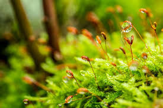
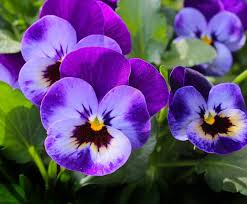
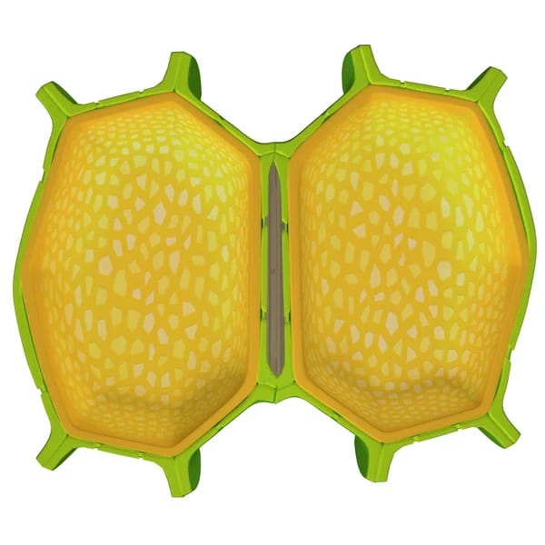
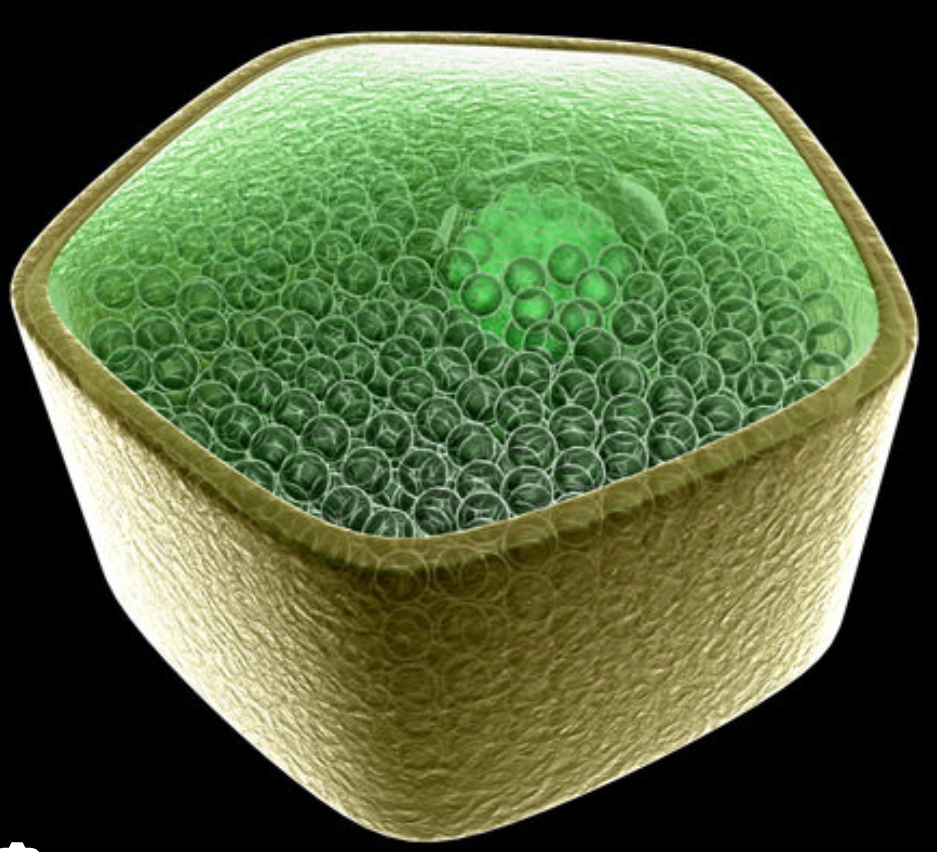

Morfología de la célula vegetal
La célula vegetal es la unidad básica, anatómica y fisiológica de los organismos del reino Plantae. Se caracteriza por ser un sistema eucariota altamente especializado en la síntesis de carbohidratos y el soporte estructural.


Algunos aspectos importantes de la morfología de la célula vegetal son:
Forma y tamaño


Componentes de la envoltura y soporte
- Pared celular: Estructura rígida que rodea la célula y proporciona soporte y protección. Compuesta principalmente por celulosa, se divide en pared primaria (flexible para el crecimiento) y pared secundaria (rígida).
- Membrana plasmática: Bicapa lipídica que regula el transporte de solutos. En plantas, está íntimamente pegada a la pared celular debido a la presión interna.
Sistema de endomembranas y organelos
- Núcleo: Organelo que contiene el material genético (ADN) y controla las actividades celulares.
- Retículo endoplasmático: Red de membranas involucrada en la síntesis de proteínas (RER) y lípidos (REL).
- Aparato de Golgi: Organelo que modifica, clasifica y empaqueta proteínas para su transporte.
- Cloroplastos: Organelos exclusivos de las células vegetales donde se realiza la fotosíntesis, convirtiendo la energía solar en energía química.
- Vacuola central: Gran compartimento lleno de líquido que almacena agua, nutrientes y productos de desecho, además de mantener la turgencia celular.
- Mitochondrias: Organelos responsables de la producción de energía en forma de ATP.
Estructuras de comunicación
- Plasmodesmos: Canales que atraviesan la pared celular, permitiendo la comunicación y el transporte de sustancias entre células adyacentes.
- Citoesqueleto: Red de filamentos que proporciona soporte estructural, facilita el movimiento intracelular y participa en la división celular.